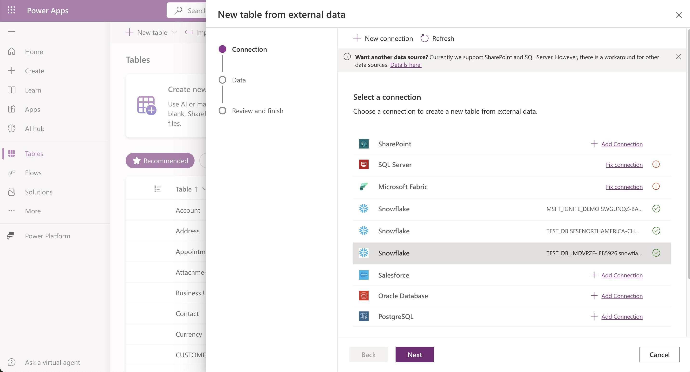
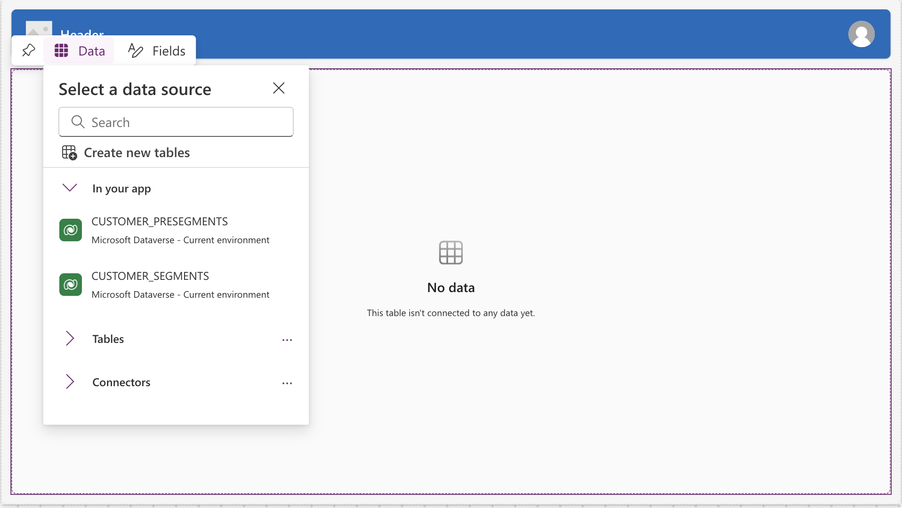

Join Snowflake and Microsoft for a quickstart to build a business application with Microsoft Power Apps that can access retail customer data as virtual tables, do a writeback, trigger a flow using Power Automate without making a copy of the data.
We will use the new Power Apps connector from Microsoft premium connectors marketplace, which leverages Snowflake SQL API, and allows you to read, write and execute Snowflake objects.
Power Apps
Microsoft Power Apps and Power Automate are part of the Microsoft Power Platform, a suite of tools designed to empower organizations to create custom applications and automate workflows with minimal coding effort.
Snowflake
Snowflake is a cloud-based data platform that allows organizations to store, process, and analyze massive amounts of structured and semi-structured data. It provides a scalable and fully managed services that support diverse data types, making it an ideal choice for businesses looking to harness the power of their data.
You'll Learn
- Using Power Platform to read and write to Snowflake.
- Leveraging Snowflake ML in Power Automate
What You'll Need
- Signup for free Snowflake Account
- Signup for Power Apps Account
- You must have a premium Power Apps license
- Use your existing Company Entra ID, or sign-up
What You'll Build
- Load customer data into Snowflake tables.
- Configure a connection between PowerPlatform and Snowflake.
- Use Power Apps to build a model app, access Snowflake tables to read and writeback.
- Use Snowflake Notebook to create a Machine Learning model.
- Invoke model predictions using Power Automate.
Create Snowflake Objects
The first thing we will do is create a database and warehouse in your Snowflake environment.
USE ROLE accountadmin;
CREATE OR REPLACE WAREHOUSE HOL_WH WITH WAREHOUSE_SIZE='X-SMALL';
CREATE OR REPLACE DATABASE HOL_DB;
GRANT USAGE ON WAREHOUSE hol_wh TO ROLE public;
grant usage on database hol_db to role public;
grant usage on schema hol_db.public to role public;
-- Create a Table with the columns suggested below
USE ROLE accountadmin;
USE DATABASE hol_db;
USE WAREHOUSE hol_wh;
CREATE OR REPLACE TABLE CUSTOMER_PRESEGMENT (
ID NUMBER(38,0),
AGE NUMBER(38,0),
GENDER VARCHAR(16777216),
INCOME NUMBER(38,0),
SPENDING_SCORE NUMBER(38,0),
MEMBERSHIP_YEARS NUMBER(38,0),
PURCHASE_FREQUENCY NUMBER(38,0),
PREFERRED_CATEGORY VARCHAR(16777216),
LAST_PURCHASE_AMOUNT NUMBER(38,2)
);
GRANT ALL ON SCHEMA hol_db.public TO ROLE ANALYST;
Get Sample data and scripts
- Download the data for the demo sample data file =======
- Login to Snowflake Account and go to Data -> Databases -> HOL_DB
- Select table CUSTOMER_PRESEGMENT and click Load Data

- Accept the defaults and complete loading data.
Set up Azure AD (Entra ID) authentication for Snowflake
Now we need to set up an app registration for Active Directory (Entra ID) OAuth, which will establish trust between your Power Platform and Snowflake. This allows you to define and manage permissions and ensures only authorized users to access your application.
For the purposes of this demo, we will create a MAKE SURE YOU FOLLOW SERVICE PRINCIPAL AUTH Authentication and the steps are provided in the document below.
https://learn.microsoft.com/en-us/connectors/snowflakev2/#supported-capabilities-for-power-apps, but you can download & run the scripts below in Azure CLI as an admin
Script-for-Windows Users | Script-for-Mac Users
Build a PowerApp and connect to Snowflake data
After you have configured Power Apps Connector to Snowflake, go to Power Apps
- Click Tables -> Create Virtual Table

- Select Connection that you have setup in prior step, click NEXT 
- You should now see the table CUSTOMER_PRESEGMENT, click NEXT
- On Configuration screen, click Next and click FINISH on the last screen.
- Now, you see that age is negative for ID1 and ID2, click the pencil to make changes and save.

- Click Apps, click [Start with a page design]
- Select a dataverse table, and search CUSTOMER_PRESEGMENT and click Create App
- Save the app as Marketing Segments.
- Click the Play button.

- As a marketer you notice the customers aren't segmented as there is no segment field.
Lets look at the clustering Model and deploy it
Typically your datascience teams trains and deploy the ML models, and you can invoke them.
- Download the Customer Segmentation Notebook Jupyter ipynb
- Connect to Snowflake: Projects -> Notebook
- Import the notebook you downloaded earlier by clicking import .ipynb file

- Click on packages, and make sure you add the packages listed in the screenshot

- Click the RunALL button or click START and execute individual cell.
- Create a Procedure to Invoke Model Predictions by running below SQL in a worksheetstoredproc
Build a Power Automate Flow
Let's build a Power Automate Flow to call stored procedure you created and run the model.
- Launch Power Automate
- Click My flows -> + New Flow -> Instant Cloud Flow
- Give a name Call_Segmentize and select "When Power Apps calls a flow (V2)" for Choose how to trigger this flow

- In the canvas -> click New step
- Search "Snowflake" and select "Submit SQL Statement for Execution" as shown

- Let's add the following parameters
- Instance - your Snowflake account URL(WITHOUT https)
- Body/statement - CALL segmentize(‘CUSTOMER_PRESEGMENT',‘CUSTOMER_SEGMENTS'); (*** Advanced Parameters ***)
- database - HOL_DB
- schema - PUBLIC
- warehouse - HOL_WH
- role - ANALYST

- Run the flow and ensure it completes successfully.
Update PowerApp to invoke your Flow
- Put a button called Segmentize in the CUSTOMER_PRESEGMENT screen.

- Click Tables -> Create Virtual Tables and select CUSTOMER_SEGMENTS
- Let's create another screen (name: Trigger_Success) to indicate when the flow is completed.
- You can choose "Header and Table" or "Blank: for the screen type, we will connect new view named CUSTOMER_SEGMENTS which has the PREDICTION field.  (*** You may see data because you tested the flow ***)
- Go back the CUSTOMER_PRESEGMENT screen, click the segmentize button and in the Properties->Advanced table pick ONSELECT action and enter (Call_Segmentize.Run(); Navigate(Trigger_Success))

- Now you can see PREDICTION column in the CUSTOMER_SEGMENTS view displayed.

Run the below SQL in Snowsight
DROP DATABASE hol_db;
DROP WAREHOUSE hol_wh;
Congratulations! you have completed the lab.
What You Learned
- In this lab we queried Snowflake tables as Virtual tables in Power Apps, performed write-back.
- Invoked a Snowflake UDF to get a ML prediction using Power Automate.
Resources
[Power Platform](https://learn.microsoft.com/en-us/power-apps/Power Apps-overview)
Things to look out for
- Use Service Principal based Authentication and test the connection with a Power Automate flow for troubleshooting
- Make sure you have set the role, default_namespace, default_warehouse, login_name are set are set for the service_principal user.
- If you're not seeing the Snowflake actions in your options double check your Power Automate Environment and make sure you're using an environment where the Snowflake connector is available.